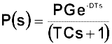
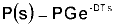
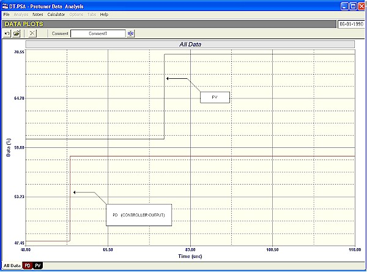
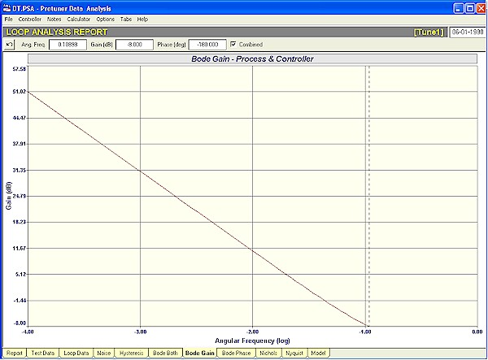
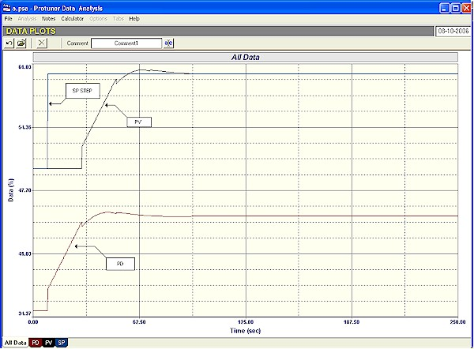
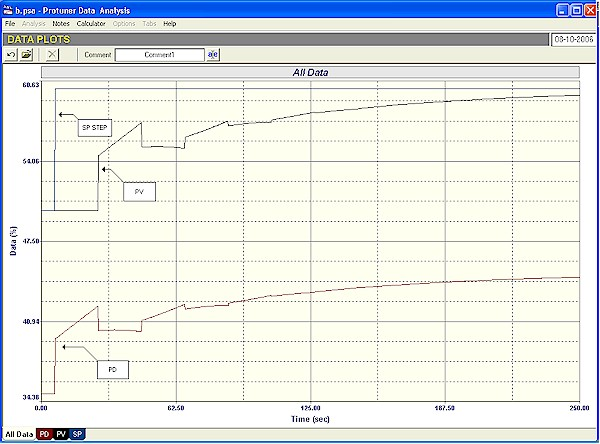

|
| [Home] [About us] [Contact us] [Training] [Optimisation services] [Protuner] |
| [Loop signatures] [Case histories] [Continuous loop performance monitoring] |
|
Loop Problem Signatures Part 2 10. DYNAMICS OF SIMPLER PROCESSES Pure deadtime, self-regulating process In the previous article in this series, the tuning of a simple first order lag, deadtime, self-regulating process was discussed. The transfer function of such a process is:  The term "controllability factor" was defined in a previous article as DT/TC, and it was mentioned that the larger it gets, the more difficult it is to control, and as it gets smaller, the easier the control. A deadtime dominant process is defined as one where the deadtime is greater or equal to the time constant. As a general note many, if not most of the tuning packets and methods can only work on processes that are not deadtime dominant. The example in the previous article was for a controllability factor less than unity. In this article and the next, we will look at cases where the controllability factor is at either of the two extremes. In this one we will deal with a process where the factor is infinity. Effectively this is a process with zero lags. I have called it "a pure deadtime self-regulating process".  I have read quite a few articles and textbooks where the authors state that that such a process cannot be controller with a PID controller. Possibly this is true if the "D" term is used, but it definitely can be controlled by a PI controller. There are in fact special deadtime controllers on the market, often referred to as model predictive controllers, and one in particular, called the "Smith Predictor", is well known. Most of these try and cancel out the deadtime by inserting a delay block in the feedback leg. I have never yet met anyone who has had much success with such controllers. One consulting control engineer at one of the UK's largest steel companies told me that he has tried them on quite a few occasions, and that the problem he found was that the process' dynamics change around too much, so the model is no good. In practice it would be almost impossible to exactly find a self-regulating process with only a gain and a deadtime in a real plant, as nearly all processes will also have some other additional response like a lag or a ramp. However I have come across some controls on conveyor belt feeders where the deadtime is so much larger than any other dynamics like lags and ramps, so that they can be considered as pure deadtime self -regulating processes. Figure 1 illustrates such a dynamic with a process gain of 1, and a deadtime of 20 seconds. This is quite an interesting process in practice, as the PV (process variable) exactly follows every movement of the PD (controller output) one deadtime later.  Figure 1 The Bode open plots shown in Figure 2 are also very interesting. The gain plot (on the bottom) is a line running horizontally from low frequency and stops when the phase lag (top curve) reaches -180º. In the previous article on the example with the controllability factor less than one, the Bode gain plot dropped off due to the lag in the process and ended off at -180º phase lag with a slope of –20db/decade.
Figure 2 This is certainly quite serious from the tuning point of view, because it means that the proportional gain in the controller must be severely reduced in order to allow sufficient gain margin for safety when the loop is in automatic. It must also be noted that the D term must not be used, as it will lift up the right hand side of the plot even further. (When it comes to deadtime dominant processes the D term does stand for "DO NOT USE"). Figure 3 shows the Bode closed loop gain plot with a Protuner tuning of P = 0.23 and I = 6.4 seconds/repeat. It can be seen that the shape is not perfect pole cancellation, with a slight upward bend on the right hand side. This means that theoretically the response will be slightly slower than ideal.  Figure 3 The actual control response to a setpoint step change with this tuning is shown in Figure 4. It is in fact really excellent, with the process reaching setpoint in roughly two deadtimes. (The Protuner does in fact contain some special "tricks" when it comes to tuning deadtime dominant processes, and as quite a lot of control people will attest, there are many such processes, previously always in manual, now running in automatic thanks to this tuning ability).  Figure 4 Figure 5 shows the response to a step change in setpoint with a Ziegler Nichols tuning which gives P = 0.45 and I = 33.2 seconds/repeat. It is not good at all, and is many times slower than the Protuner's tuning. However to be completely fair, Ziegler and Nichols did say in their article on their tuning methods, that they did not know how to deal with deadtime dominant processes.  Figure 5 To conclude it can be definitely said that reasonable tuning can be obtained on very deadtime dominant processes using P+I controllers. However the controller does have to be detuned (P gain reduced) for stability. Derivative should never be used on such processes. In general the main problem found with such processes is when load changes occur too frequently to catch with the possible tuning. In such cases alternative control strategies must be considered. Michael
Brown is a specialist in control loop optimisation, with many years of
experience in process control instrumentation. His main activities are
consulting, and teaching practical control loop analysis and
optimisation. He gives training courses which can be held in clients'
plants, where students can have the added benefit of practising on live
loops. His work takes him to plants all over South Africa, and also to
other countries. He can be contacted at:
|